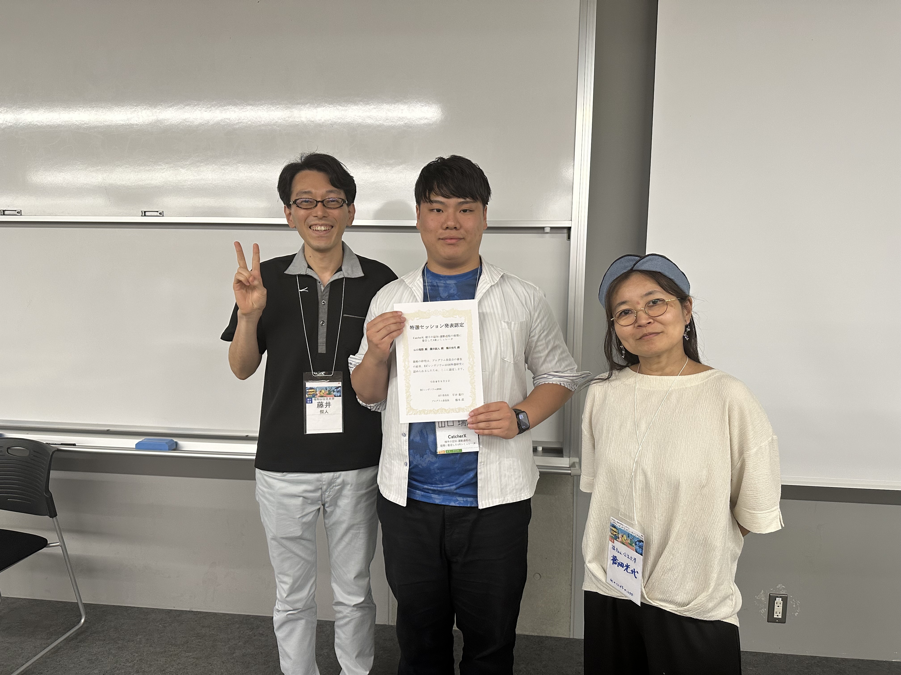

記事の概要
エンタテインメントコンピューティング2026（EC2026）でCatcherXが受けた「特選セッション発表認定」と「レコメンデモ認定」について，福知山公立大学公式ホームページ内の「News（お知らせ）」に紹介記事が掲載されました．
記事では，昨年度から発展した研究内容，二つの表彰を受けての思い，今後のCatcherXの展望についてコメントしています．
研究題目： CatcherX: 捕手の認知-運動過程の循環に着目したVRシミュレータ
表彰： 特選セッション発表認定，レコメンデモ認定
掲載された受賞コメント
このたび、特選セッション発表認定とレコメンデモ認定の二つの表彰をいただき、大変光栄に思います。
昨年度のCatcherXは、多様な投球を「捕る」体験を形にするところから始まりました。今年度は、捕手が担う行動をより広く取り入れることを目指し、配球を考え、投球を予測し、身体を調整して捕球し、その結果を次の判断へつなげるまでの一連の過程をシステムに組み込みました。その中で、こうした一連の行動を、捕手の認知と動作が循環する過程として捉え、研究として発展させました。査読付き口頭発表として採択されたことに加え、実際に体験していただくデモ・ポスター発表でも評価されたことを、研究と体験の両面でCatcherXが前進した結果として受け止めています。
一方で、率直に言えば、今回の結果には大きな喜びと同時に、自分が目指していたところには届かなかったという悔しさも残っています。だからこそ、今回の受賞を到達点ではなく、次の挑戦への出発点にしたいと考えています。今後は、捕球だけにとどまらず、送球やブロッキング、走者への対応など、捕手の守備を構成する行動をさらに取り入れていきます。将来的には、現実の身体の動きが仮想空間でのプレーを生み、そこで起きた出来事が身体感覚や緊張感としてプレイヤに返ってくるような、現実と仮想が相互に作用する捕手体験を実現したいと考えています。
研究・開発や発表にあたってご指導くださった橋田光代先生、藤井叙人先生をはじめ、実験やデモにご協力いただいた皆様、会場で貴重なご意見を寄せてくださった皆様に、心より感謝申し上げます。
